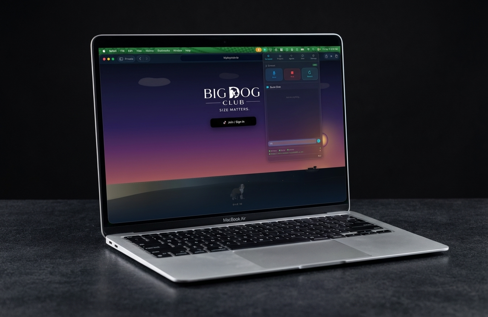
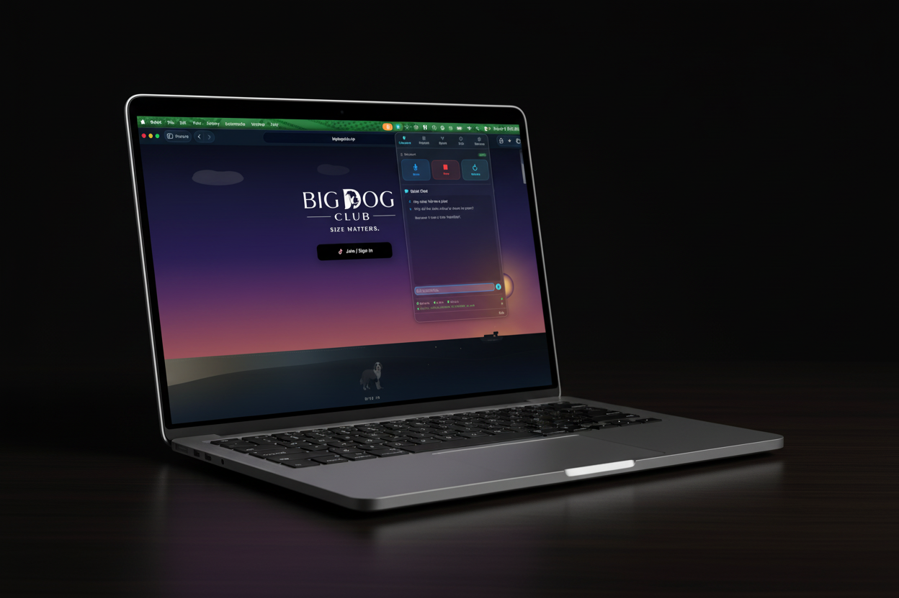
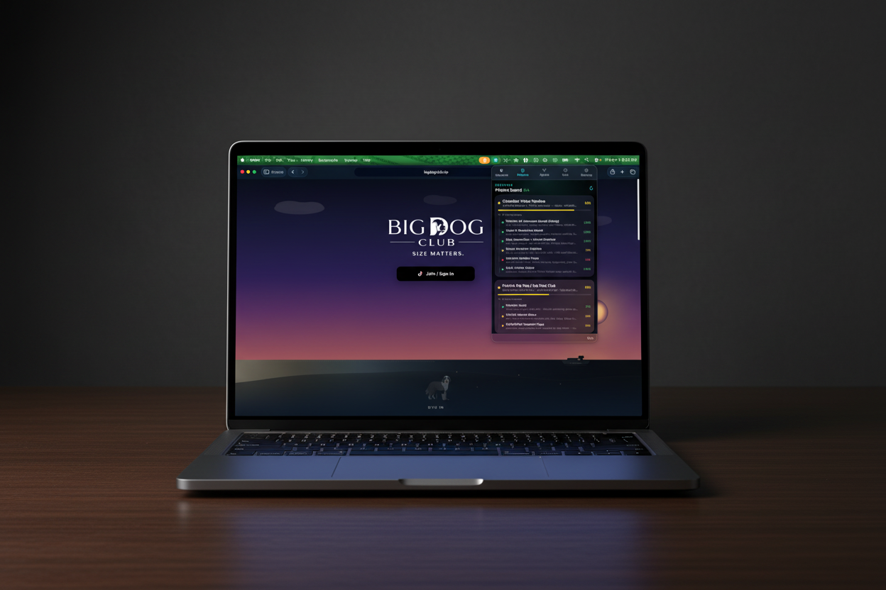
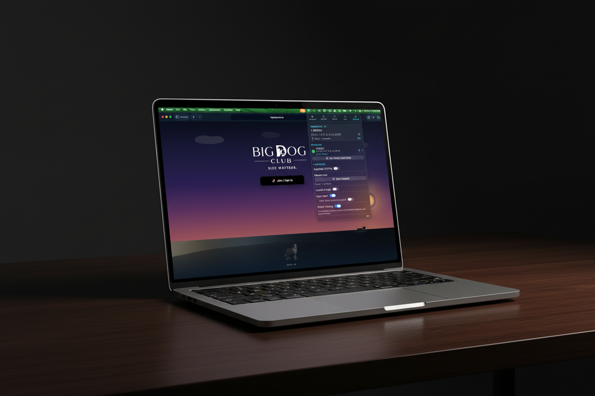
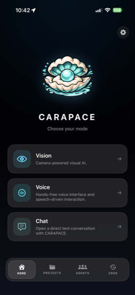
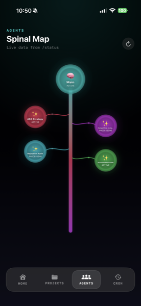
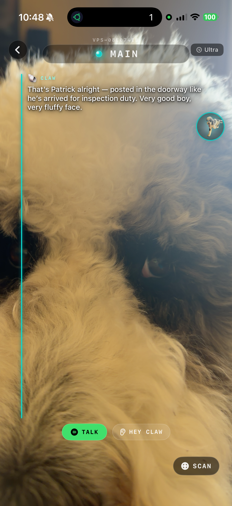
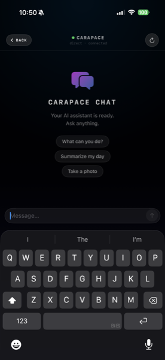
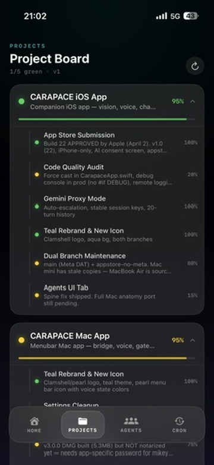

Runs on your hardware. Not ours.
Your AI. Your Machine.
Your Rules.
We're just helping you feed it the data it's craving.
Mac, VPS, or Raspberry Pi. Setup is copy-paste simple — a friend's onboarded in about 5 minutes.









